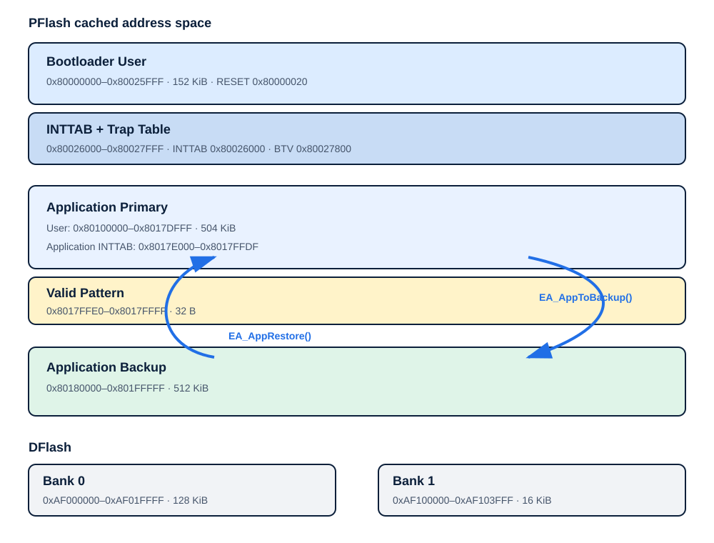
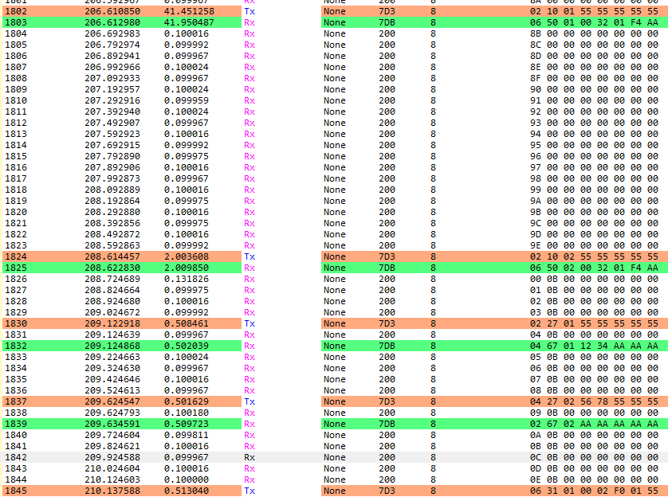
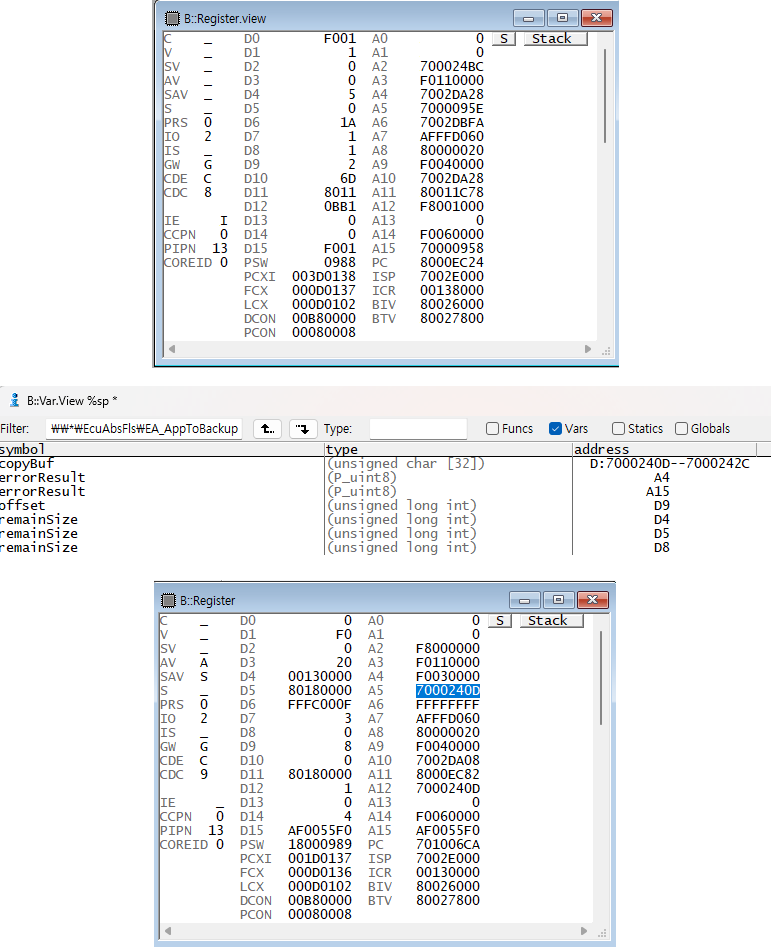
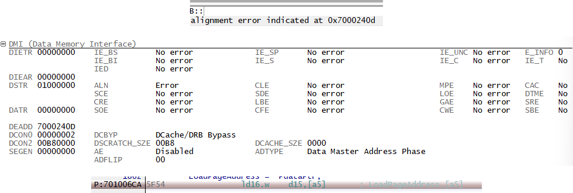

Problem
Primary를 지운 뒤 전송이 실패하면 실행 이미지가 사라집니다
업데이트 전 이미지를 보존하고, 새 Binary의 기록·검사가 실패했을 때 이전 이미지로 복원하는 원자적 실패 정책이 필요했습니다.
CASE 03 · EMBEDDED FOUNDATION
진단 재프로그래밍의 정상 경로와 실패 복구를 함께 구현했습니다. 공개된 실행 근거의 수준, 현재 재검증할 수 없는 항목, 보안 모델의 한계를 생산 수준 성과와 구분합니다.
개인 교육 프로젝트 · 2026.03.03–2026.03.24 · 기여 100%. 제공된 AURIX TC234LP와 AUTOSAR MCAL 교육 환경에서 UDS 진단 처리, Flash 복사·복구, 무결성 판정 흐름을 구현했습니다.
Problem
업데이트 전 이미지를 보존하고, 새 Binary의 기록·검사가 실패했을 때 이전 이미지로 복원하는 원자적 실패 정책이 필요했습니다.
Decision
먼저 Primary에서 Backup으로 복사한 뒤 Primary를 지우고, 무결성 실패 시 Backup에서 Primary로 복구하는 순서를 사용했습니다.
Scope
제공된 툴체인과 MCAL을 사용한 개인 학습 결과이며, 양산용 secure boot 또는 최신 하드웨어 검증 완료를 의미하지 않습니다.
Bootloader, Application Primary, Valid Pattern, Application Backup, DFlash의 링크 주소를 기준으로 복사 방향과 실행 조건을 명시했습니다.

구현한 7개 UDS 서비스는 0x10, 0x27, 0x31, 0x34, 0x36, 0x37, 0x11입니다. 0x31이 Erase·Backup과 Programming Dependency 확인의 두 routine에 사용되므로 전체 순서는 8단계입니다.

Session
Programming Session으로 전환하고 SecurityAccess 단계를 통과한 요청만 보호된 프로그래밍 흐름으로 보냅니다.
Transfer
Backup과 Erase, Download 범위 설정, Block Sequence 전송, 종료와 SHA-256 판정을 순서대로 수행합니다.
Finalize
Programming Dependency 분기를 거친 뒤 성공 또는 복구 정책이 완료된 경우에만 Reset으로 이동합니다.

공개 테스트 상태는 PASS 7 · Evidence unavailable 2 · Not executed 1입니다. 구현 코드가 있다는 이유만으로 실행 성공으로 바꾸지 않았습니다.
정상 리프로그래밍, Valid Pattern 보호, SHA-256 불일치 복구, Primary↔Backup 복사, 비정렬 오류 재현과 정렬 수정 회귀가 공개 PASS 범위에 포함됩니다.
0x31 RoutineControl 도중 CAN 응답이 멈춘 지점에서 함수 breakpoint와 DMI trap을 함께 확인했습니다. copyBuf, A5, DEADD가 0x7000240D에 수렴해 비정렬 source buffer를 원인으로 특정했습니다.
Observe
RoutineControl에서 Backup을 시작한 직후 응답이 끊겨 Flash write 호출 경로에 breakpoint를 배치했습니다.
Correlate
Variable View의 copyBuf, A5 register, DMI의 DEADD가 모두 0x7000240D를 가리켜 4-byte alignment 위반을 교차 확인했습니다.
Fix
uint32 배열을 backing storage로 두고 uint8 view로 접근해 FlsLoader_Write source의 4-byte 정렬을 보장한 뒤 양방향 복사를 재확인했습니다.



고정 prefix SHA-256은 HMAC도 전자서명도 아닙니다. 공격자가 prefix를 알거나 획득하면 digest를 다시 계산할 수 있어 재계산 공격을 막지 못합니다.